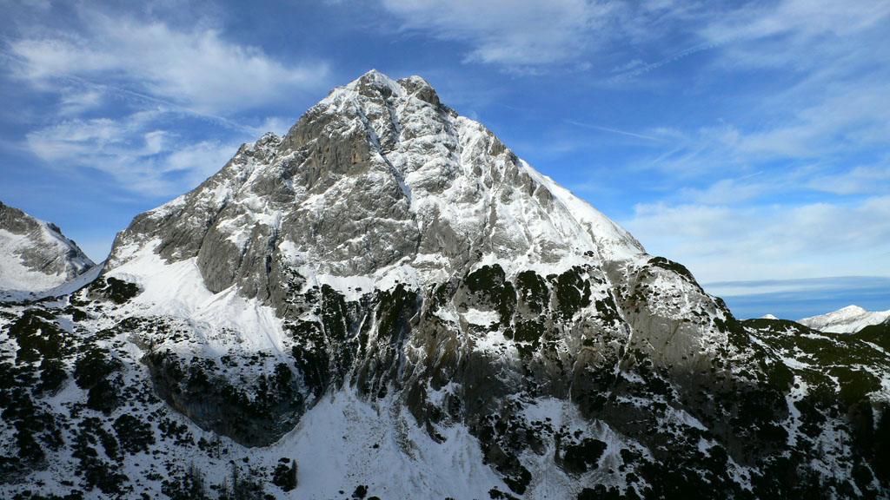
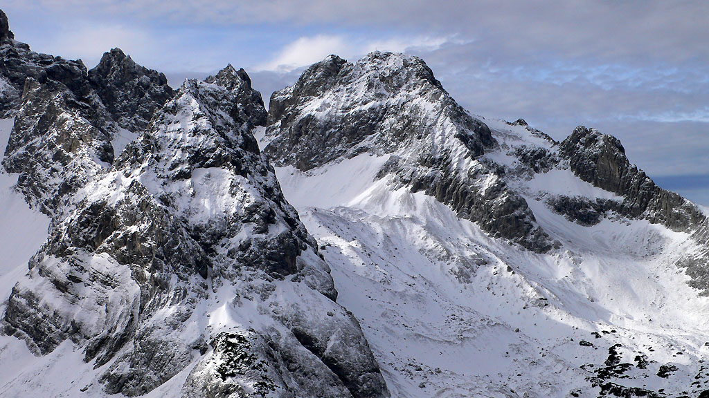
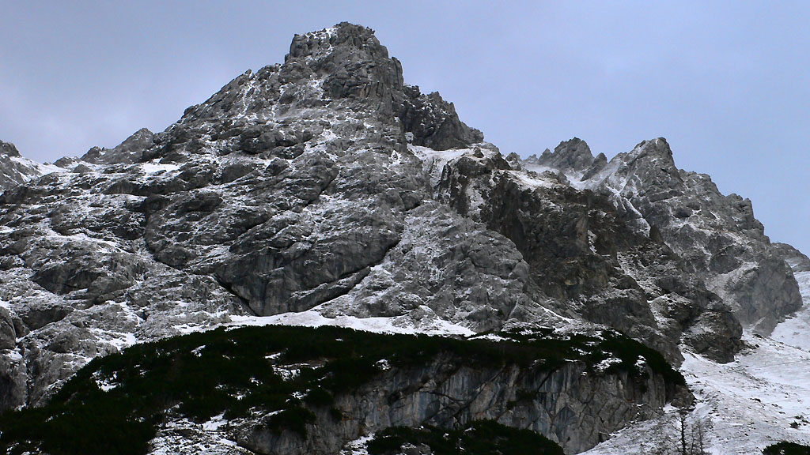
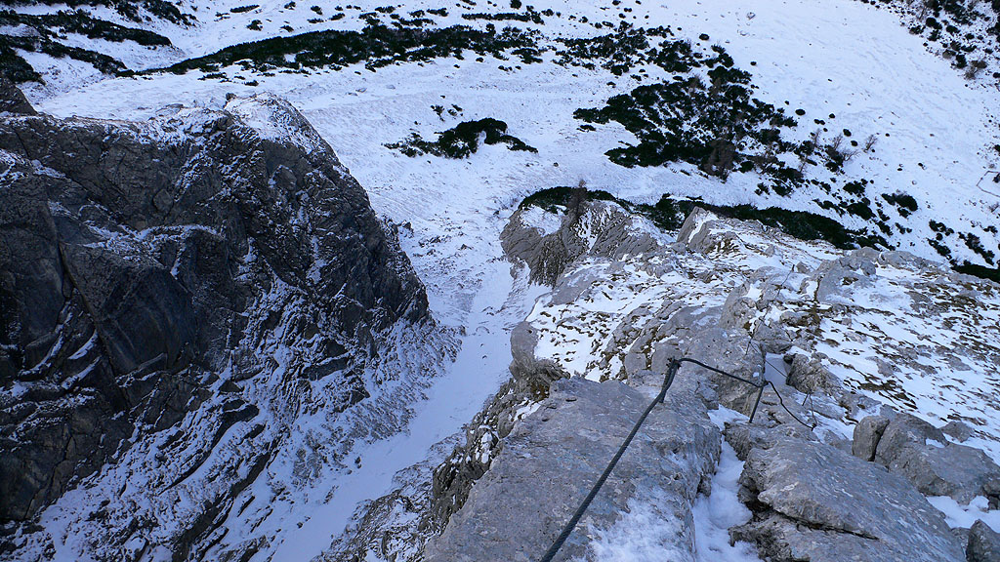
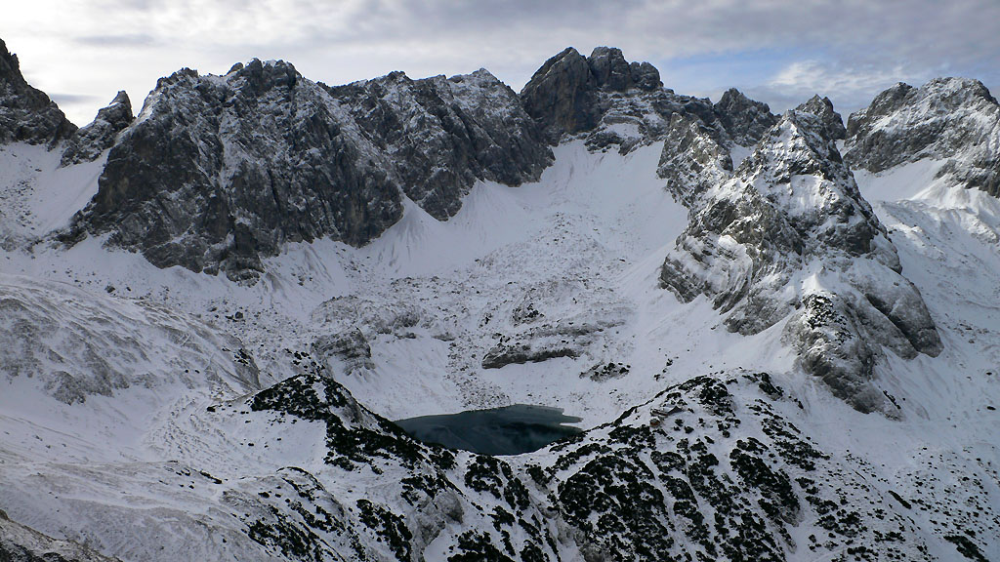
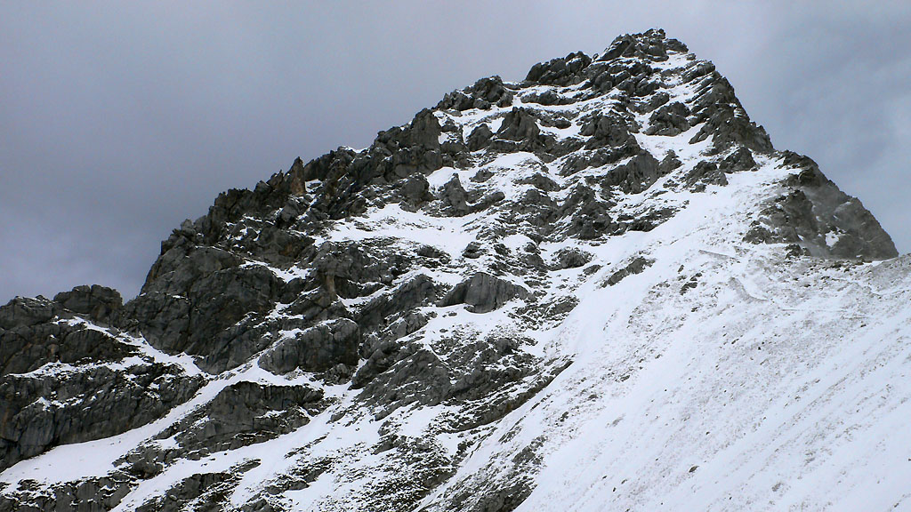
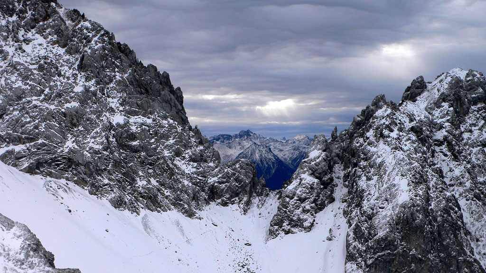
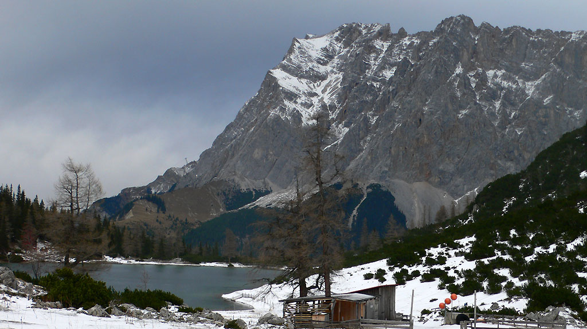

Vorderer Tajakopf
West Ridge Via Ferrata
Here I set some video footage to music. Enjoy!
After a few gray days made it clear that winter was coming, I figured I should get one more hike in and pretend it was still fall. In September I’d tried to visit the Mieminger mountains above Ehrwald, but rain drove me back. Today, the forecast promised that the rain would hold off until afternoon. I believed it, and soon was parking at the Ehrwaldalm lift station and getting my via ferrata gear together.
This is a special trailhead full of via ferratas, trails, alpine and sport rock climbs. A year before, I’d climbed the route “Tirol Plaisir” (VI+ or 5.10a YDS) with my friend Mat. It’s a fun multipitch sport climb that runs right of the Seebener Klettersteig. Now I was back for the Klettersteig, and hoped to do more above the lake.
An easy trail leads from the lift station along a bubbling creek to the basin below the cliffs. I followed signs warning of danger up to the base of the wall. The Zugspitz behind me caught the morning light, and south walls lit up. The route begins with a “bang”, possibly to try and get anyone less confident to change thier minds. I did my best to use leg power and climbing technique to avoid the depressing hauling-up-the-cable moves that modern “sport klettersteigs” are so fond of. It was cold but I took my gloves off often to be able to feel small holds. It was a fun bit of exercise, and completely to myself!
There were two spots on this via ferrata that I thought were kind of dangerous. Usually, before a hard move, you can clip your sling to the cable right above a spike, to have a top rope sort of belay. But twice there were long sections with no spikes, then a hard (maybe IV-) move had to be made before you could clip the next spike. Anyway, it felt only a notch safer than soloing. I really, really wouldn’t want to fall on a via ferrata. The severe load on your gear and the wrenching fall have got to produce some real injuries.
But aside from these minor quibbles, it was a fun way to start the day. Near the top, a long pitch ascended a vertical slab with comical little spikes to use as hand and footholds. It was a great novelty to go out for a hike and find yourself on such terrain!
Above this final cliff, a trail (and a nice goat) led me into the hanging valley with the Seebensee. I followed trail then road under a few inches of snow to the lake, which greeted me with a blast of wind. I was amazed by the peaks behind the lake, such as the Drachenkopf (“Dragon summit”). The Ehrwalder Sonnenspitze was massive on my right, and the Taja summits blocked the sun on the left.
On the other side of the lake, I found the valley station of the utility lift to the Coburger Hut. My guidebook suggested I’d find a trail leading left up scree to the base of the Vorderer Tajakopf via ferrata. But I couldn’t find it. Animals saved the day. Goat tracks led me through latschen trees and onto the snow-covered screes. The wind was very strong, and I could already see my good weather breaking down to the north. I resolved to go up as long as the Zugspitz summit was clear.
Not sure which of many cliffs to begin the climb on, I made for the one that looked most like a ridge at the moment, having to step carefully on the icy/snowy slope. As I got close I spied a little plaque and then the tell-tale line of the ferrata cable. Thus vindicated, I put my helmet and gloves back on, and started up. First some easy ground on the ridge, though the verticality to the right side into a deep chasm increased rapidly. Then some tests. The cable led me right up vertical sections of rock. My favorite parts were when it was steep, but you could also make climbing moves like stemming in a chimney, and not have to touch the cable at all.
One thing interesting, is that I think if the route were climbed without the via ferrata, it would often go on easier ground slightly left. The cable rather whimsically kept you always on the steepest terrain. For that reason, I’m not sure that the route would have as hard of a difficulty grade as an alpine rock climb as the moves on the ferrata would suggest. Higher, the ridge became more defined and there was less room to hunt for easier terrain left.
The snow increased, and I had to deal with ice over slabs more as I went higher. I stopped halfway up and ate some cookies. It was fun to admire the Ehrwalder Sonnenspitz and imagine the line of the route there. Also I heard occasional blasts of music from Ehrwald! Then the wind would howl once more, the powdery snow would blow and it would be gone. “Could it be a parade?” I wondered, imagining a colorful array of dirndl’s and lederhosen through the streets far below.
Higher, the wind increased, and I could see the summit cross. Although it was a lot further away than I thought, I was pleased to be approaching the summit. My toes were getting cold. Once, I was surprised to be slipping and falling while traversing a slab of rock covered in snow. The snow gave away halfway across to reveal verglas-covered rock which my boots skated uselessly on. I started to fall back, banged my elbow on something, and finally got a rock in the right direction for a foot to stabilize myself. I went back up more carefully, wondering how to climb this in winter without the cable. A few more sections like this required care. Oddly, the hard parts were the “easy ground” that were prone to snow and icing, while the vertical cliffs were pretty straightforward.
Eventually the cable led up and down over towers then disappeared in the snow. I followed what I imagined was a trail on easier terrain up to another cliff where the cable resumed. After this additional section, I reached the north-south ridge crest in screaming wind. “Cool!” I thought. “Now going down will be soon.”
But I had to join the normal route just below the summit. It was only 20 feet away, on the other side of a rib. Amazingly, the cable ended for the via ferrata, and getting over there didn’t look easy. I had to climb around the rib, now pleasant with snow and ice on the slabby rock.
“Great.”
I proceeded the only way possible. Slowly and methodically, making sure of each foothold and handhold, one at a time. Tuffs of dirt were trustable because they were frozen, though the rock on the rib was loose if it looked inviting as a handhold.
Good, it’s done.
Some more protected cable led up in a switchback and ended. I kicked steps in the snow then climbed rock to suddenly arrive at the summit cross. I relaxed briefly, already concerned about the way down because it had looked steep from my angle on the left. No one had signed the summit register in a couple of weeks, maybe I’ll be the last this year? The cross said there are many ways to God. “No kidding,” I murmured, and crawled carefully away, downclimbing to the cable again. I had been punching holds in snow as “handholds” sometimes, so I got out my ice ax, realizing I’d have an interesting snow descent ahead.
Soon the cable, which made life easy, came to an end. In a month or so, this climb will be much easier on the snow, but for now it’s a thin enough layer that you can’t really get a belay with the ice ax. You also feel the ice or slippery grass underneath. Trying to keep to the heaviest areas of snow, I slowly came down. I relaxed a bit at the Vorderer Taja Toerl, where I could plunge step easily down broad slopes of snow. Should I just go down the couloir? It looked to head straight down to the start of the route. But such decisions have a way of backfiring, so instead I followed a faint line of trail down and to the south. Amazingly, a goat was traversing up here on the Hintere Tajakopf. What a lonely and amazing creature. What did he want up here in the blowing snow?
Later I had to be careful where water ice covered the path where it narrowed on a cliff. I chopped two steps with my axe and took off one glove for a key dimple handhold on a slab. Eventually I was walking on level ground above the Drachensee. The wind picked up ice crystals and whipped them at me. I had to cover my whole face with my hands and wait! I thought I’d have a scarred appearance after a few more of those. At a saddle, I turned right, and away from the Drachensee. Eventually I lost the trail, and had to piece a route through more cliffs. “What an adventure!” I thought. Then ducked again from another wave of ice crystals.
Below I saw two figures near where I forged up to the Tajakopf. After more plunge-stepping, cliffs, scree, and latschen trees, I was back down. I went to the little building at the utility lift station and took shelter in the barn. Ah - I could take off my harness and helmet, and eat a few cookies while the wind howled outside! Well, I only had two walls, but it was nice.
I decided to take the Hoher Gang trail to get down. It gave a nice side view on the Seebener Klettersteig cliff, though somewhat tree-obscured. There was a great little picnic table on a steep rock outcrop along this trail. I have to remember that for some summer day and family. Perhaps with some Brotzeit supplies! The Ammergau Alp peaks were now fully in cloud, and the Zugspitze was disappearing too.
After leaving the Hoher Gang trail for a faint side trail that I hoped would lead directly to the lift station, I reached the car at 3 pm. Oops…that’s when I promised to be home! The raindrops started in Ehrwald, where all signs of a parade, if there had been one, were gone.
|
 The Ehrwalder Sonnenspitze, a beautiful peak. |
|
 Mieminger peaks wearing a winter coat. |
|
 The Vorderer Tajakopf, and long West Ridge. |
|
 A look down on the lonely Taja Klettersteig. |
|
 The Drachensee (Dragonlake) and friends. |
|
 The Route Normale comes down the ridge. |
|
 A gate to bigger ranges in the south... |
|
 The Zugspitze dressing for winter. |
{kind=link}
{kind=link}
{kind=link}
{kind=link}
{kind=link}
{kind=link}
{kind=link}
{kind=link}